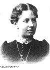

| . | Соња
Коваљевска није била само велики математичар већ и писац и борац за женска
права у 19. веку , дакле једна заиста изузетна жена. Њена борба да себи
обезбеди најбоље могуће образовање је омогуцила женама да похађају универзитетске
студије као равноправни студенти. Осим тога, њена достигнућа у математици
су натерала њене мушке колеге да преиспитају своја старомодна схватања
о женској инфериорности у односу на мушкарце у научном раду.
Соња Круковски Коваљевска (Сонyа Круковскy Ковалевскаyа) рођена је 1850. у руској племићкој породици и одрасла је окружена луксузом. Међутим, није била баш срећно дете. Осећала се запостављеном, као средње дете, поред своје старије веома вољене сестре , Аните и млађег брата, Феђе, наследника. Током највећег дела детињства имала је веома строгу гувернанту која је васпитавање Соње да постана дама схватила као своју личну мисију. Као последица тога, Соња је постала поприлично нервозна и повучена што ју је пратило целог живота. Математику је открила као веома млада. Она тврди да је добро проучила белешке свог оца које су стајала на зиду њене собе уместо тапета. Такође, она сматра да је за њену љубав према математици највише "крив" њен ујак Петар који је доста времена проводио са њом распларваљајући о појединим математичким појмовима. Када је имала 14, сама је научила тригиномтерију да би могла да схвати поглавље о оптици у књизи из физике коју је тада читала. Аутор те књиге и њен комИја, професор Тиртов (Тyртов), био је импресиониран њеним способностима и убедио је Соњиниг оца да јој дозволи да оде у Ст. Петерсбург да настави школовање. По завршетку средње школе Соња је чврсто одлучила да настави школовање на универзитетском нивоу. Међутим, најближи универзитет отворен и за жене био је у Швајцарској, а у то доба младим, неудатим женама није било дозвољено да путују саме. Како би решила тај проблем, Соња се, септембра 1868, удала за Владимира Коваљевског. Првих пар месеци брака су провели у Петерсбургу а затим отишли у Хајделберг где је Соња први пут привукла пажњу. Свима је била интересантна тиха млада Рускиња са изванредним академским угледом. 1870, Соња је одлучила да своје студије настави код Карла Вајерштраса (Карл Wеиерстрасс) на Универзитету у Берлину. Вајерштрас је већ тада сматран за најугледнијег матеамтичара свог времена али у почетку није Соњу схватао озбиљно. Дао јој је пар проблема да реши и тек после прегледања њеног рада открио је какав геније стоји пред њим. Одмах је почео да је приватно подучава јер универзитет тада није дозвољавао женама да студирају. Соња је код њега учила 4 године. Једном приликом је рекла: "Те године имале су највећи могући утицај на моју каријеру као математичара. Тада сам конанчно и неопозиво одлучила који ћу правац следити у свом раду: сав мој рад биће у духу Вајерштраса." На крају те четири године имала је већ три рада за собом за која се надала да ће јој донети диплому. Један од њих, "О парцијалним диференцијалним једначинама", објављен је у Креловом (Црелле) часопису, што је била велика част за непознатог математичара. У јуну 1874, Соња Коваљевска је добила докторску титулу од Универзитета у Гетингену (Готтинген). И поред те престижне титуле и Вајерштрасове помоши није успевала да пронађе посао. Она и Владимир су се вратили у Палобино, Соњиној породици. Убрзо по њеном повратку кућу њен отац је преминуо. После очеве смрти Соња и Владимир су се напокон заљубили. Из те љубави се родила једна кћи. Током свог боравка код куће Соња је у потпуности занемарила математику. Уместо тога, окућала се у књижевности, пишућприче, позоришне критике и научне чланке за новине. 1880, Соња се вратила математици са новим жаром. На једној конференцији излагала је рад о интегралима и била је веома добро примљена. Поново се нашла у ситуацији да тражи посао у области коју највише воли - математици. Одлучила је да се врати Вајерштрасу. Недуго по доласку у Берлин сазнала је за Владимирову смрт. Он је починио самоубиство када је сав његов посао пропао. Туга је учинила да ради више него икад. Коначно, 1883, Соњи се поново осмехнула срећа. Добила је позив да предаје на Универзитету у Штокхолму од Вајерштрасовог бившег ученика Госте Миттаг - Леффлера. У почетку је то било само привремено запослење, али пет година рада је било довољно да управа Униоверзитета схвати колико је Соња била значајна. Уследио је период великих успеха. Добила је трајно запослење на Универзитету, постала је уредник математичког часописа, написала је свој први рад о кристалима и, 1885, постала је шеф катедре за математику. У међувремену је са пријатељицом Аном Леффлер написала позоришни комад "Борба за срећу". 1887, Соња је поново добила ужасавајуће вести. Смрт њене сестре, Аните, је била поготово тешка со обзиром на то да су њих две биле веома блиске. На срећу, недуго потом је дошао њен највећи тријумф. 1888, предала је рад "О ротацији крутог тела око фиксиране тачке" на такмичење за награду Бордин Француске Академије наука и - победила. "Пре Софије Коваљевски (Сиње Коваљевске) једино су разматрани случајеви ротирања симетричног тела" (Раппапорт). У свом раду, Соња је развила теорију о ротацији несиметричног крутог тела код кога се центар масе не налази на оси ротације. Рад је био толико успешан да је награда са 3000 повећана на 5000 франака. Отприлике у исто време, још један човек је ушетао у Соњин живот. Максим Коваљевски је дошао у Штокхолм да одржи низ предавања. Ту је упознао Соњу и они су имали бурну везу. Основни проблем било је то што су обоје били страсно везани за свој рад и нису желели да га напусте због другог. Рад је одвео Максима из Штокхолма и он је желео да Соња напусти свој теШко стечени положај да би постала његова жена. Соња је доста хладно одбила тако нешто али и поред тога није могла да поднесе да га изгуби. Остала је у Француској током лета са њим и запала у још једно стање депресије. Поново се окренула писању и до краја свог боравка у Француској завршила је "Сешања на детињство". У јесен 1889, вратила се у Штокхолм. И даље је била тужна због Максима иако је жесто путовала и Француску да га види. Као последица свега тога, разболела се од упале плућа и депресије. Десетог фебруара 1891, Соња Коваљевска је умрла. Цео научни свет је с тугом реаговао на ту вест. Током своје каријере, Соња је објавила десет радова из математике и математижке физике и неколико књичевних дела. Велики део њених научних радова садржао је фундаменталне теорије или је отварао врата будућим открићима. Нема сумње да је Соња Круковски Коваљевска била изванредна особа. Председник Академије наука, који је Соњи уручио награду Бордин, једном је рекао: "Наши чланови сматрају да њен рад сведочи не само о дубоком и широком образовању, већ и о уму невероватне инвентивности".
Перл, Тери. "Сонyа Ковалевскаyа" Матх Еqуалс: Биограпхиес оф Wомен Матхематицианс анд Релатес Ацтивитиес. Раппапорт, Карен Д. "С. Ковалевскy: А Матхематицал Лессон." Тхе Америцан Матхематицал Монтхлy 88 (Оцтобер 1981) |
.  |